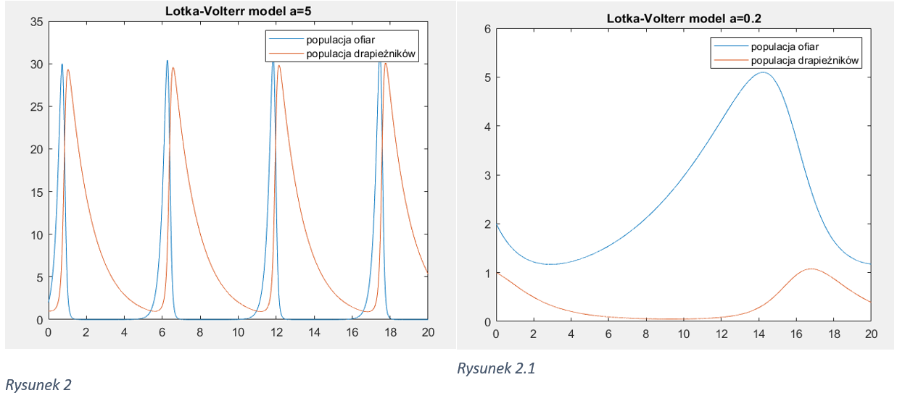

Model Lotki-Volterry (MatLab)Model Lotki-Volterry (MatLab)
Model Lotki-Volterry (MatLab)Model Lotki-Volterry (MatLab)Model Lotki-Volterra to model matematyczny wykorzystywany do opisu dynamiki interakcji między dwoma gatunkami w ekologii populacji. Został on zaproponowany przez Vito Volterrę w 1926 roku i Basila Lotkę w 1920 roku. Model ten zakłada, że zmiany w populacji obu gatunków zależą od ich interakcji, a także czynników zewnętrznych, takich jak dostępność zasobów i siedlisko.
W tym sprawozdaniu model zostanie przedstawiony w środowisku MATLAB przy użyciu metod numerycznych do analizy dynamiki populacji. Obejmuje to napisanie kodu do rozwiązania równań różniczkowych Lotki-Volterry i wizualizację wyników, takich jak wykresy zmian wielkości populacji w czasie i portrety fazowe w celu analizy stabilności systemu i obecności różnych rodzajów zachowań populacji.
Model Lotki-Volterra to model matematyczny wykorzystywany do opisu dynamiki interakcji między dwoma gatunkami w ekologii populacji. Model ten zakłada, że zmiany w populacji obu gatunków zależą od ich interakcji, a także czynników zewnętrznych, takich jak dostępność zasobów i siedlisko.
Matematyczne podstawy modelu: Mamy dwa gatunki: ofiara (oznaczmy jako x) i drapieżnik (oznaczmy jako y). Model jest opisany następującym systemem równań różniczkowych:
\[ \begin{cases} \frac{dx}{dt} &= (a - by) \\ \frac{dy}{dt} &= (cx - d)y \end{cases} \]$$ {\frac{dx}{dt} = ax - bxy} $$
$$ {\frac{dy}{dt} = (cx - d)y} $$
Parametr a: Reprezentuje tempo wzrostu populacji ofiar w braku drapieżników. Możemy zwiększyć lub zmniejszyć jego wartość, aby zobaczyć, jak wpływa to na populacje obu gatunków. Na przykład, gdy a jest większe, populacja ofiar będzie rosła szybciej, co może prowadzić do wzrostu populacji drapieżników.

Parametr b: Określa wpływ drapieżników na zmniejszanie populacji ofiar. Możemy eksperymentalnie zwiększyć lub zmniejszyć b, aby zobaczyć, jak wpływa to na liczebność obu gatunków. Gdy b jest większe, drapieżnicy będą bardziej skuteczni w redukowaniu populacji ofiar, co może prowadzić do spadku populacji ofiar i wzrostu populacji drapieżników.
Parametr c: Określa skuteczność drapieżników w łowieniu ofiar. Możemy zmieniać c, aby zobaczyć, jak wpływa to na dynamikę populacji. Gdy c jest większe, drapieżnicy są bardziej skuteczni w łowieniu ofiar, co może prowadzić do szybszego wzrostu ich populacji.
Parametr d: Reprezentuje stopień śmiertelności drapieżników w braku pożywienia. Zmiana d może wpłynąć na dynamikę populacji drapieżników. Gdy d jest większe, drapieżnicy mają większe ryzyko śmierci z braku pożywienia, co może prowadzić do zmniejszenia ich populacji.
Zmiana początkowej liczby ofiar: Zaczynając od różnych początkowych wartości liczby ofiar, można zaobserwować, jak to wpływa na dynamikę populacji ofiar i drapieżników w czasie. Na przykład, większa początkowa liczba ofiar może prowadzić do początkowego wzrostu populacji drapieżników, a mniejsza początkowa liczba ofiar może prowadzić do szybszego wyginięcia drapieżników.
Zmiana początkowej liczby drapieżników: Podobnie jak w przypadku ofiar, zmiana początkowej liczby drapieżników może wpłynąć na dynamikę populacji obu gatunków. Większa początkowa liczba drapieżników może prowadzić do szybszego zmniejszenia liczby ofiar i późniejszego wzrostu populacji drapieżników, podczas gdy mniejsza początkowa liczba drapieżników może prowadzić do mniejszego wpływu na populację ofiar.

Redukcja liczby ofiar o 20% w momencie maksymalnej populacji może skutkować krótkoterminowym zmniejszeniem populacji drapieżników, ale może również pomóc w odbudowie populacji ofiar. To może prowadzić do długoterminowej oscylacji w liczebności obu populacji, wpływając na dynamikę ekosystemu.
Wzajemne oddziałowanie: Model uwzględnia złożone interakcje między populacjami drapieżników i ofiar. Zmiany w jednej populacji mają bezpośredni wpływ na drugą, prowadząc do dynamicznych zmian w obu populacjach.
Cykle populacyjne: Model ilustruje występowanie cykli populacyjnych, w których wzrost populacji jednego gatunku prowadzi do wzrostu populacji drugiego, a następnie spadku obu populacji, tworząc cykl oscylacyjny.
Stabilność ekosystemu: Wyniki modelu sugerują, że stabilność ekosystemu można osiągnąć poprzez regulację interakcji między populacjami, co prowadzi do równowagi populacji.
Wrażliwość parametrów: Zmiany parametrów modelu, takich jak płodność i śmiertelność, mogą znacząco wpływać na dynamikę populacji, podkreślając wrażliwość ekosystemów na zmiany środowiskowe.